← results · play the world model → · last updated 2026-08-28
Nine substrate families, all generated by simulators this project either wrote
or wraps deterministically. That is not incidental: the whole method depends on
being able to branch the same (state, action) many times to read
off a model-free ceiling, and on snapshot / restore / state-injection for the
counterfactual measurements. Off-the-shelf game environments give none of the
three, which is why SkirmishCTF and VoxelWorld are ours rather than a wrapper
around Melting Pot or MineRL.
Every rollout below is fully autoregressive and never repaired: the model is given one true start state and the recorded action sequence, then feeds on its own predictions. Left = ground truth, right = model. Captions state the tick at which the two first differ.
self-built engineup to 1024 players
snapshot / restore / injectMelting Pot
paintball__capture_the_flag rules
Two teams, paintball beams, flags, destructible walls, respawns. Written from scratch rather than wrapped, because the counterfactual benchmark needs state restore, the population-invariance test needs state injection, and the exact- rollout supervision needs to feed model-generated states back into the engine — the official Lua engine has none of these.
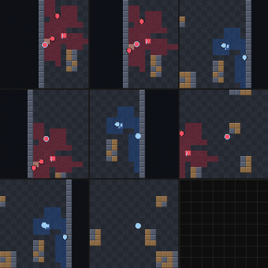
| measurement | value | what it means |
|---|---|---|
| state sufficiency | 1.0000 (192/192) | typed state + recorded RNG determines the successor exactly — the interface is lossless |
| C1_joint (dense, 20.7 live) | 0.6257 | model-free ceiling under saturated contention |
| factorization gap | +0.0103 | what a per-record decomposition gives up, priced through random priority |
| D_compose @ N=32 | 0.0208 | the deterministic half the gap above cannot see (measured 2026-08-28) |
| contested ticks | 0.9% → 100% | N=2 → N≥128; interaction components stay small (max 29 at N=1024) |
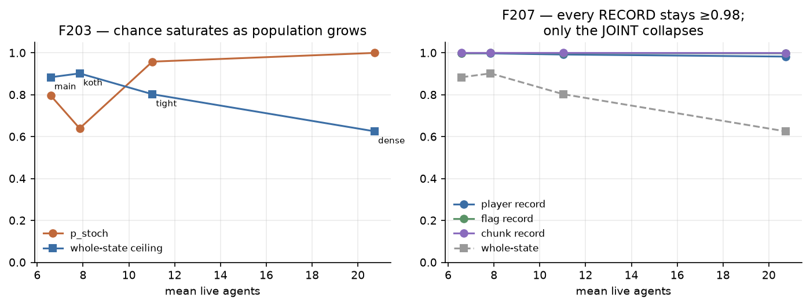
self-built enginecamera inside the state 8 yaws × 5 pitchesreal occlusion
A Minecraft-shaped voxel world with the camera in the state
(a_yaw 0–7, a_pitch −2…2), so partial observability and
occlusion are real rather than decorative. Not MineRL/Malmo/Craftium: none of them
offers determinism, snapshot/restore or state injection, and without those the
model-free ceilings — the denominator under every number here — cannot be computed
at all.
Play it in your browser → WASD to move, Q/E to turn, R/F to look, G to dig. Digging changes what other agents would see, which is the second-order interaction a collision-counting metric misses.
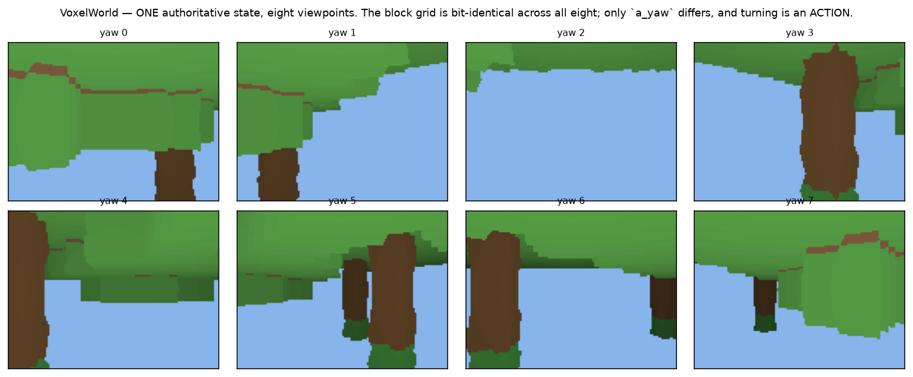
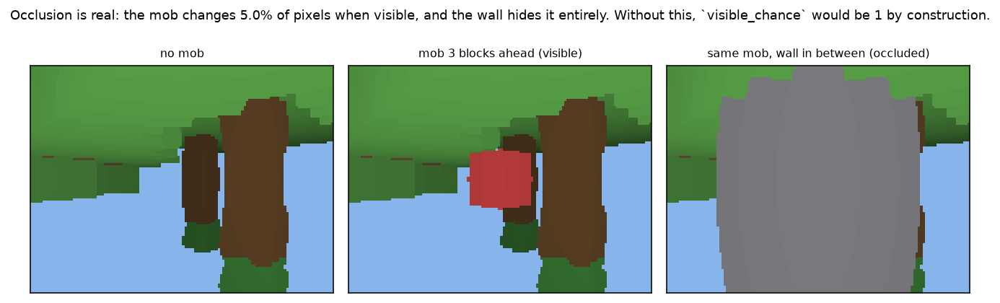
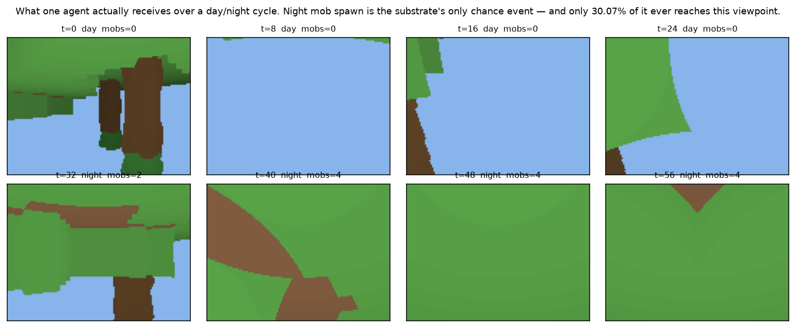
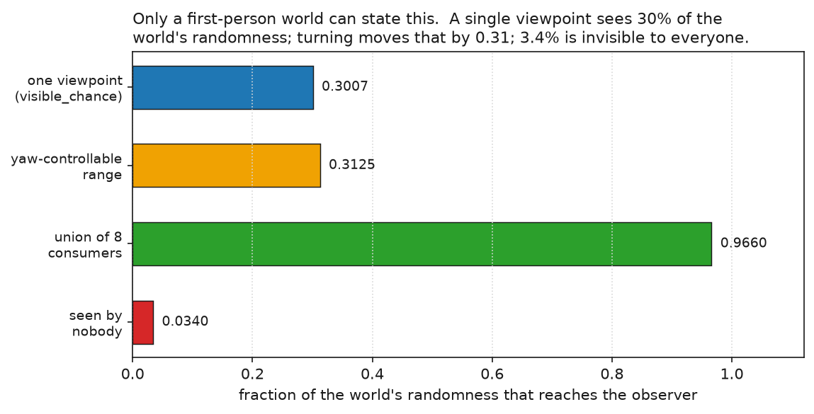
| corpus | fields | p_stoch | ceiling | model H1 | note |
|---|---|---|---|---|---|
| voxel_uniform | 1843 | 0.1211 | 0.9537 | 0.7656 | gap is capacity, not training (60k = 120k exactly) |
| voxel_miner | 1843 | 0.1562 | 0.9436 | 0.7500 | directed digging policy |
| voxel_hunt | 1843 | 0.1797 | 0.9087 | — | moving mobs |
| voxel_small | 629 | 0.1289 | 0.9558 | — | the field-count falsifier |
| voxel_crowd8 | 1962 | 0.1758 | 0.9348 | training | N=8, 93.1% of state shared, D_compose 0.0039 |
| voxel_crowd32 | 1906 | 0.2734 | 0.9263 | training | N=32, 61.4% shared, D_compose 0.1055 |
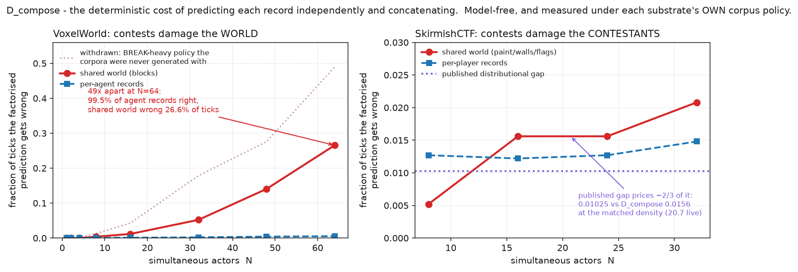
The flat tier, and the one where the ceiling argument is sharpest: the raw numbers for Asterix and SpaceInvaders look similarly bad and the diagnoses are opposite. All six rollouts below use the converged 60k checkpoints — the same models behind Table 1.
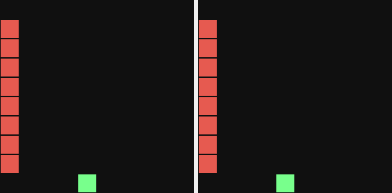
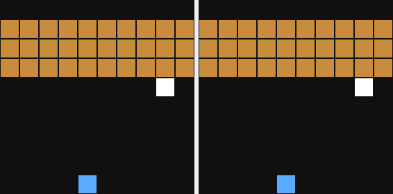
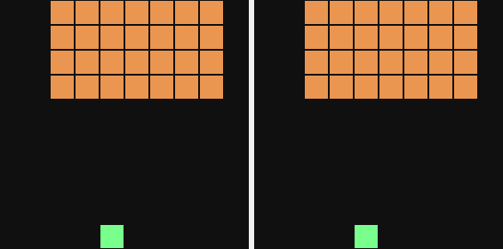
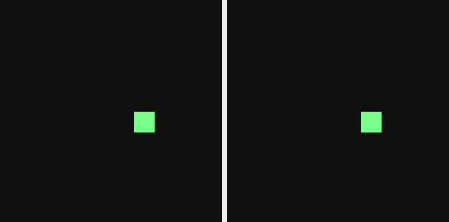
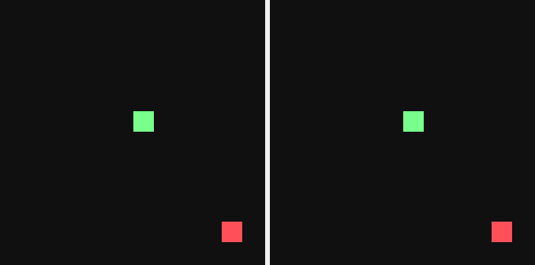
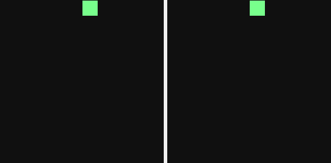
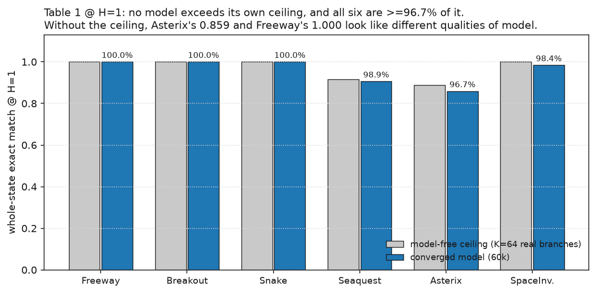
Two wire formats over the same game: 236 fields (Classic — player, inventory, a 3×3 terrain patch) and 1530 fields (Full — 67 achievements, 9 floors of chests and kills, 72 ladder fields the schema itself annotates "static per episode", 126 mob slots). Both are currently running COPY arms, and the pair is a within-domain test of the rule that the COPY gain tracks static share rather than field count.
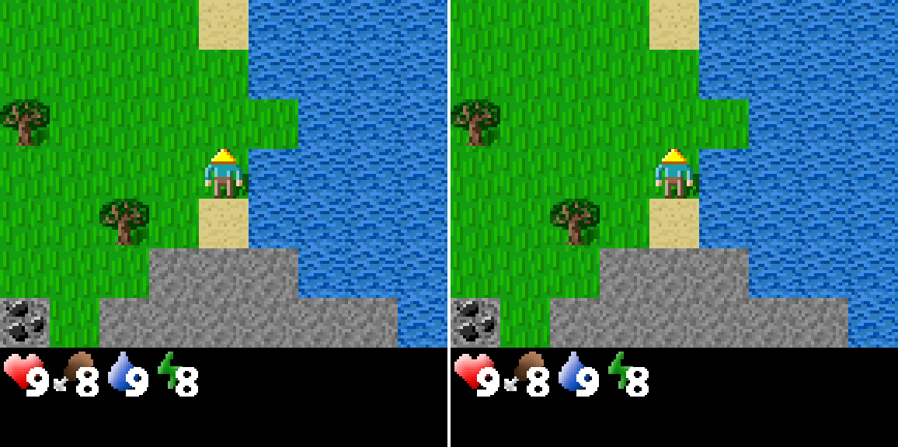
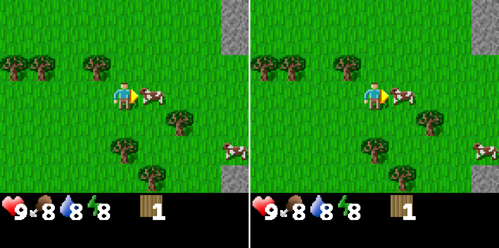
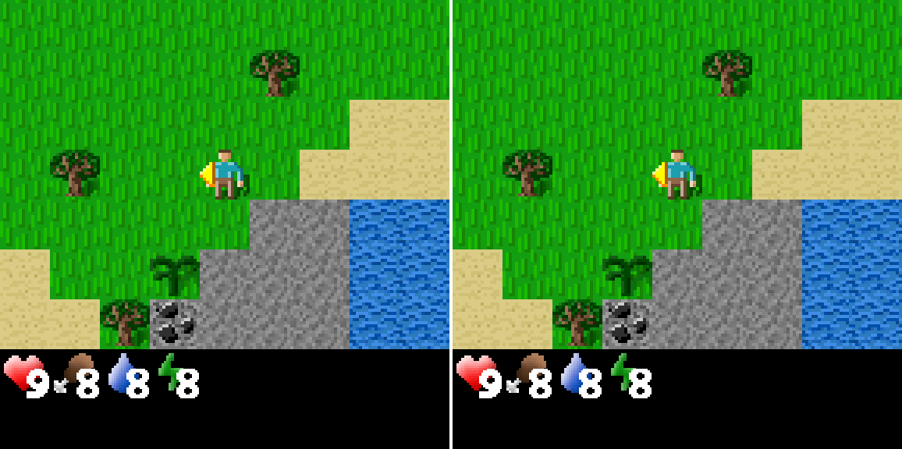
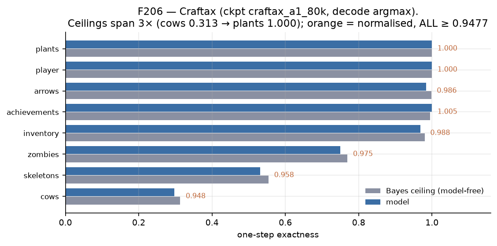
changed_frac 0.0092 — 99.08% of its 1530
fields are byte-identical between consecutive ticks.Used for one specific question no flat substrate can ask: is the predicted state right only from the cameras it was scored on? Each predicted state is rendered from freely-sampled poses as well as the task cameras, and — after the 2026-08-28 correction — against a frozen-state floor at the same pose.
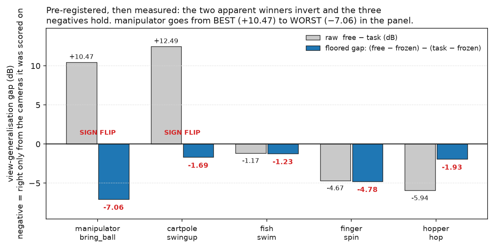
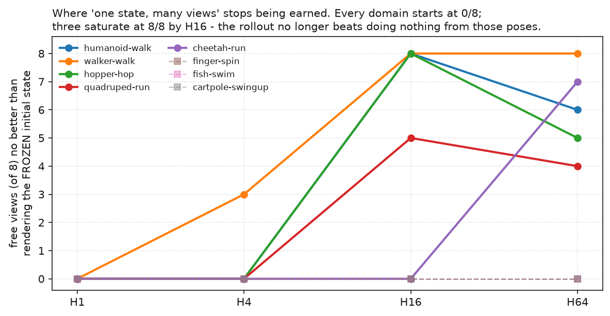
A separate question from state prediction: given an authoritative state, can a learned renderer produce the frame? Ten Atari games, with per-pixel error maps that localise where a renderer fails rather than reporting one PSNR.
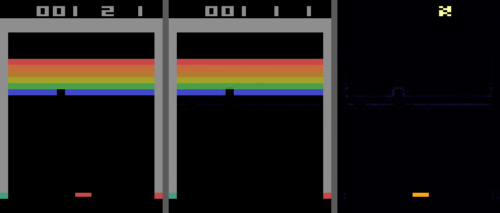
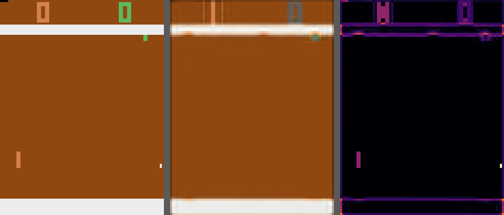
Every rollout on this page is autoregressive and unrepaired, from the converged checkpoints. Where a model diverges, the caption says when — including the two cases where the environment, not the model, is the reason.